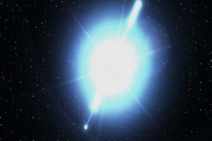
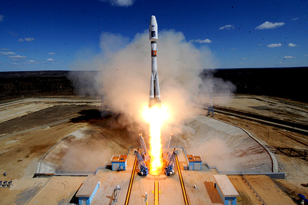
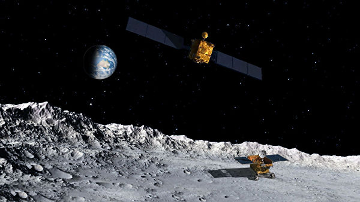

 Ультрафиолетовый телескоп, установленный на российском спутнике «Ломоносов», обнаружил в земной атмосфере неизвестное науке явление. Об этом рассказал директор НИИ ядерной физики МГУ Михаил Панасюк в интервью РИА Новости.
По словам Панасюка, телескоп зафиксировал мощные световые взрывы, природа которых пока не ясна. «Похоже, мы натолкнулись на новые физические явления.
Во время полета "Ломоносова" на высоте нескольких десятков километров мы несколько раз регистрировали световой взрыв огромной мощности. А под ним все чисто, никаких гроз и облаков! Что вызывает взрыв — вопрос открытый»
В 2017 году в Московском государственном университете имени Ломоносова открылся факультет космических исследований. Предполагается, что он станет ведущим центром для подготовки профессионалов, активно участвующих в космической экспансии человечества и, в частности, России. «Лента.ру» рассказывает о том, чему могут научиться студенты в стенах факультета и для чего это нужно.
Космическими исследованиями и решением задач по освоению космоса ученые Московского университета занимаются с середины прошлого века. Выдающиеся ученые, которые создали космическую славу нашей страны работали в Московском университете, среди них — Мстислав Келдыш, Лев Понтрягин, Дмитрий Скобельцын, Дмитрий Охоцимский, Горимир Черный.
Но работа велась также и над созданием различных приборов и устройств, в том числе спутниковых систем, решались задачи по созданию тренажеров для подготовки космонавтов.
Китайский аппарат "Чанъэ-4", который ранее совершил мягкую посадку на обратной стороне Луны, успешно провел первый в истории человечества биологический эксперимент на лунной поверхности, сообщило Центральное телевидение Китая.
Для эксперимента были отобраны образцы шести биологических видов, включая хлопчатник, рапс, картофель, а также дрозофилы и дрожжи.
По данным телеканала, аппарат во вторник отправил фотографии с биологической испытательной нагрузки. На кадрах видно, что на имеющихся семенах хлопчатника уже появились ростки, и у всходов, как сообщается, хороший рост. Отмечается, что это первые ростки, полученные на Луне после таких суровых испытаний, как низкая гравитация, сильная радиация и большая разница температур.